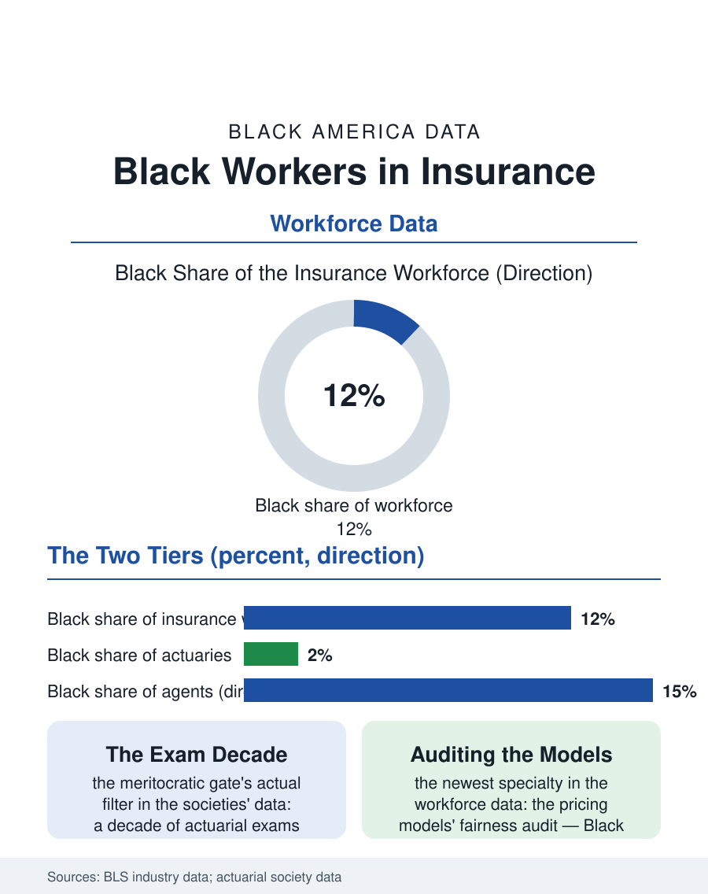

Black Employment
Protection's Sales Force: Black Workers in Insurance
An eighth of the industry, heirs of the debit route, thinnest at the actuarial and executive tiers, now auditing the pricing models themselves. The insurance file.

Insurance is the financial industry Black professionals entered earliest and the one whose agent force sold protection to the community when the majors would not: the industry's modern Black workforce, roughly an eighth of its total, divides between the legacy of the Black insurance companies of the business file and the majors' own ranks, where the actuarial and executive tiers remain the thinnest. This article reads the insurance workforce file.
Agents, Adjusters, and the Two Industries
The workforce data split the industry into its field and its home office. The agent force, independent and captive, carries the Black presence most visibly: the debit agent tradition of the Black companies, the weekly premium collected door to door, built a sales workforce whose descendant is the community agent of the current era, now selling the full line from the storefront office in the pattern of the real estate file's. The majors' agent forces recruited Black agents deliberately from the civil rights era, their ranks the industry's integration success at the distribution tier. The claims tier, the adjusters and the examiners, is the workforce's unglamorous middle, its Black share near the industry's average, its catastrophe rosters, the adjusters deployed to the hurricanes that strike the Black Gulf's parishes, being the field's most visible Black professional presence in the disaster weeks. The home office divides by credential in the familiar pattern: the underwriting and actuarial professions, whose examinations are the industry's purest meritocratic gate in design, post Black shares in the low single digits in the professional societies' data, the actuarial pipeline's length, the decade of examinations taken while employed, filtering by the employer's sponsorship and the candidate's cushion in the standard pattern of the credential files.
The Executive Tier and the Data Era
The executive tier is the file's thin top: the industry's chief executives and chief underwriters include a small number of Black officers in the majors' published leadership, and the Black insurance executives' own association functions as the tier's guild and its census keeper. The industry's transformation, the data era's repricing of risk by the algorithm, has written the workforce's newest chapter and its newest equity file: the pricing and underwriting models' inputs, the credit-based insurance scores and the territorial ratings, distribute the product's price by the neighborhood data whose racial correlation the consumer advocates and the state regulators now audit, so that the industry's Black workforce includes, increasingly, the modelers and the compliance officers who work on the models' own fairness file, a specialty that did not exist a generation ago. The insurtech startups of the current wave recruit with the diversity pitch of the tech file and post the tech file's numbers, while the mutual and community insurers, the industry's oldest Black institutional form, persist at small scale in the business file's count.
Protection's Sales Force
The insurance workforce file closes on the product's meaning in the community's ledger: the agent is the financial system in a suit at the kitchen table, the industry's trust problem and its trust solution in one person, and the Black agent's century in that chair, from the debit route to the financial planning practice, is one of the service economy's foundational professions in Black life, a fact the workforce counts understate because the agent's function, the family's first financial counsel, exceeds the policy's paperwork. The licensing examinations' pass rates and the continuing education's machinery are the workforce's unglamorous infrastructure, and the agent associations' mentorship of the young licensee repeats the chair file's pattern in a suit. The bureau counts the industry's Black workforce in the tens of thousands across its tiers. The file's last entry is the debit agent's ghost: the man who collected the quarter premium weekly at the doors of a community the actuaries had written off, and whose route book, the names and the doors and the amounts in his hand, was the community's first financial database, kept by the workforce this file counts, in the industry built on the proposition that the future can be priced, sold to the people the pricer first refused to see. The route book's descendant is the agent's book of business today, valued, bought, and inherited in the modern trade's own transactions, the community's trust converted, at last, into the transferable asset it always was.
More in Black Employment
The Black Unemployment Rate: The Two-to-One Pattern
Black unemployment runs at roughly twice the White rate — 5.5 percent against 3.3 percent in annual averages — a ratio stable across five decades of federal data. How it is measured and why it persists.
Black Median Weekly Earnings: The 80-Cent Ratio
Black full-time workers earn a median of about $900 a week — roughly 80 cents for every dollar White workers earn. The BLS earnings data by group, gender, and occupation.
Black Labor Force Participation: Working at National Rates
Black labor force participation runs at roughly the national rate — and Black women participate at higher rates than White women. The BLS participation data.
Source: Bureau of Labor Statistics industry employment data; Society of Actuaries and Casualty Actuarial Society membership data.